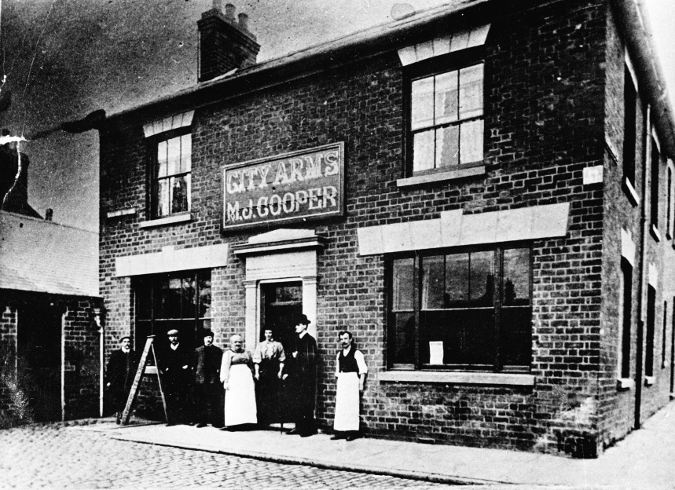

The City Arms The current City Arms only dates from 1930, but the pubs history goes back much further, to 1852 when two corner building plots were bought from the Freehold Land Society by a Thomas Dylke, a Coventry watchmaker for £55 5s 0d each. The following year Dylke sold them to Benjamin Bird for £110 7s 6d the pair. This Gentleman's address was then Smithford Street, although prior to this he had been living in Longford, where he held a farm and also ran the 'Engine Inn' in the village. Because he had only rented the 'Engine', the thought of owning an inn of his own naturally appealed to him, and seeing newly developed Earlsdon then without a pub obviously in need of one, he lost no time in getting a house built which he named the City Arms, installed a bar and the necessary stock and opened for business. His wife Amelia having died soon after the move, his daughter and son-in-law came to help him run the business, but by 1861 he had remarried and now with his new wife, Ann and a little maid of all work aged 11, he settled down to enjoy Earlsdon life for the next few years. With the local population totalling five or six hundred and with the opening of the Royal Oak and the Earlsdon Cottage, custom at the City Arms must have been somewhat limited. But pubs were not used merely for social needs, they also served as useful business venues for the local watchmakers, and as convenient places for the carrying out of inquests. In November, 1861 an inquest was held at the City Arms on Elizabeth Hawkins, aged 32 who was burnt to death at her home in Warwick Street when her skirt caught fire. This was the age of the crinoline and in those days when open fires were the only means of heating and cooking, many women lost their lives in the same way. But fashion is fashion and was just as important to Earlsdon ladies then, whatever the risk, as it is today. By 1872 Benjamin, now aged 64, felt it was time to retire and sold the business as a going concern to the Flowers family, the Stratford on Avon brewers, who had probably been his suppliers, for £700. Now began a succession of lessee landlords, Johnathon Hawley, Edwin Pitman and John Merifield. It was while Merifield was there that in 1889 a bowling and skittle alley was erected for which Flowers paid £50 with the landlord paying them an annual fee of £2. It became a very welcome relaxation and favourite pastime for the local watchmakers. In succession to Merifield came the City Arms most famous and popular incumbant, Mrs Mary Jane Cooper or 'Ma' Cooper as she was always known. 'Ma', born in Coventry, had been a nursemaid to the six children of Edgar Flowers and his wife, then living in Warwick, but when the children no longer needed a nanny at the age of 45 she left and married Robert Cooper, landlord of the Lamp Tavern in Market Street, also a Flowers House. 'Ma' took over the licence of the pub when Robert died in 1891 but after caring for children in the cultivated atmosphere of of the Flowers home , the hurly-burly of life in a city centre pub must have been quite a strain, and when the City Arms in Earlsdon became vacant the Flowers suggested she should take over and she gratefully accepted. For the next 25 years, short, stout 'Ma' reigned supreme in her little kingdom and soon became loved and respected by all her patrons. Many a tale has been told about her strictness, never suffering fools or drunks lightly, and her many kindnesses and sympathy to those in trouble or in need. She died at the pub in 1921 of simple old age and was buried at London Road Cemetery, her funeral attended by hundreds of mourners. William Tansy was the next landlord, followed in 1929 by Leonard Chambers during whose time (1931) the old building was demolished and replaced by the mock-Tudor building with prints in almost every room depicting Shakespeare plays. In the 1960s the tenants were Reg Suffolk and his wife. The Suffolk family had been in the licensing trade for about 300 years. In the 1990s the City Arms was taken over by Weatherspoons and underwent a major refurbishment to knock the smaller bars into the single large drinking area we see today. |